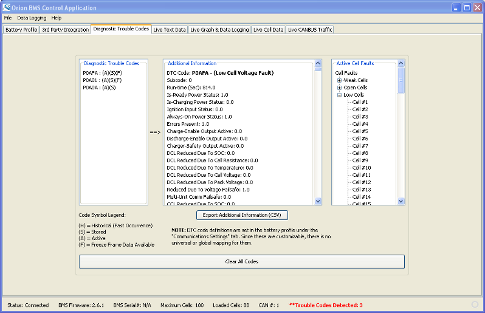

This screen is used to see what (if any) Diagnostic Trouble Codes are set in the BMS. If a code is set, selecting it in the left-hand list-box will provide additional information about the code on the right.
When supported, Freeze Frame data is available for some Diagnostic Trouble Codes and is retreived automatically when the given code is selected on the left.
This screen is also where cell-specific codes can be identified on the far right side (weak cell, open cell, low cell voltage, etc).
NOTE: Clearing diagnostic trouble codes can prevent technicians from determining problems later on. It will clear all stored and learned information.
| < Live Graph Data | Live Cell Data > |